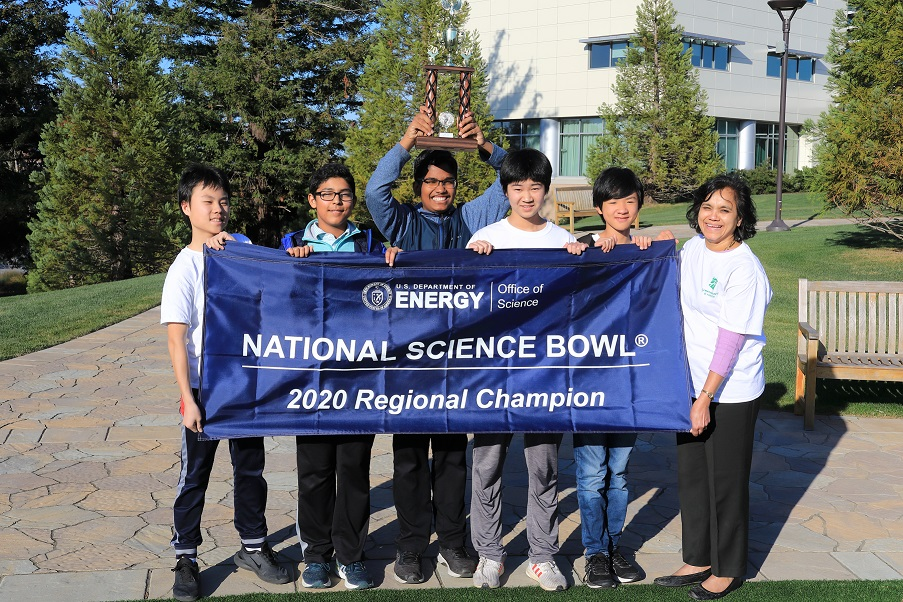
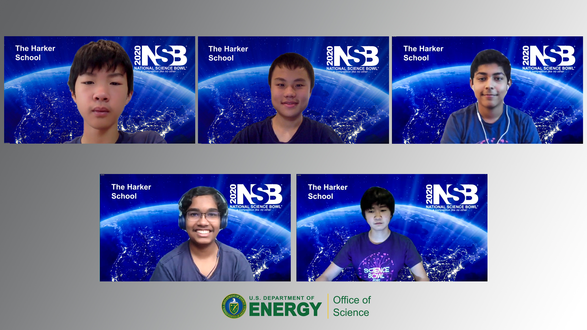
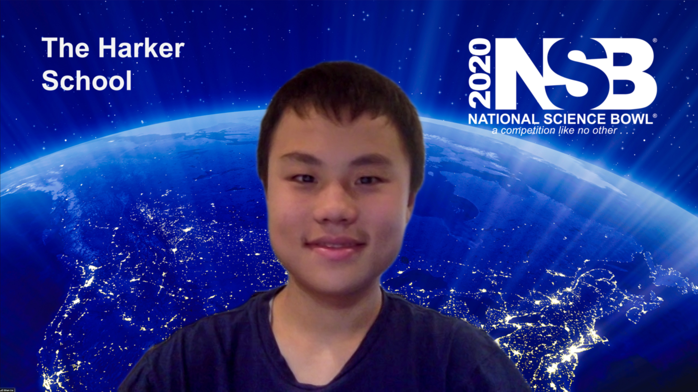

Science Bowl is a fun STEM competition for middle school and high school students. I started participating Science Bowl in the 7th grade and got hooked ever since.
2023 SLAC Regional High School Science Bowl runner-up. Harker News


2020 SLAC Regional Middle School Science Bowl Champion, with participation in the (Virtual) National Science Bowl. Harker News



I have also been coaching the Harker Middle School Science Bowl team since 2020.